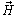
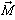
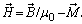
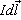
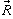
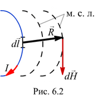
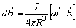
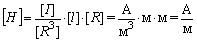
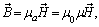

6.1.5. Напряжённость магнитного поля
Напряжённость магнитного поля - векторная величина, равная геометрической разности магнитной индукции , делённой на магнитную постоянную, и намагниченности  вещества, т. е.

Физический смысл вектора определяется законом Био-Савара: элемент тока  создаёт в точке, находящейся на расстоянии
 от элемента тока (рис. 6.2), магнитное поле с напряжённостью

 .
Единица напряжённости магнитного поля
 (ампер на метр).
Зависимость от принято записывать в виде
 |
(6.3) |
|---|
где m0 = 4pЧ10-7 Гн/м - магнитная постоянная, магнитная проницаемость пустоты; ma = m0m [Гн/м] - абсолютная магнитная проницаемость среды (вещества); m = ma / m0 - безразмерная относительная магнитная проницаемость вещества, показывающая, во сколько раз магнитная проницаемость среды (вещества) больше (меньше) магнитной проницаемости пустоты.
В зависимости от значения m различают: диамагнетики с магнитной проницаемостью m < 1 (например, серебро, медь висмут; они незначительно ослабляют магнитное поле), парамагнетики с m > 1 (например, платина, алюминий, воздух; магнитное поле в них лишь незначительно возрастает) и ферромагнетики с магнитной проницаемостью m >> 1 (m » 500…5000).